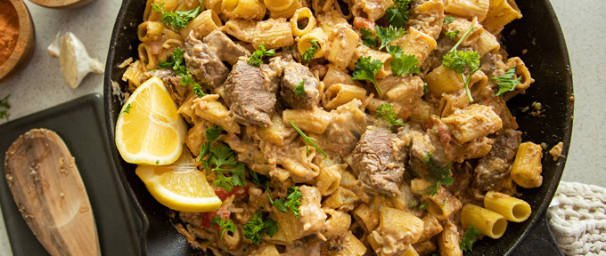

Cajun Steak Pasta
Back to home

Cajun Steak Pasta is a dish that is easy to make and is very delicious. It is a great dish to make for a family dinner or for a date night.
INGREDIENTS
- 1-2 lbs. Steak Tips
- 2 tbsp Olive Oil
- 3 tbsp Cajun Seasoning
- I box Rigatoni Pasta
- 2 tbsp Butter
- 3 cloves Garlic crushed
- 2 ½ cup Thickened Cream
- 1 tsp Lemon Zest
- 1 cup Parmesan cheese grated
- 2 Roma Tomatoes diced
- Fresh parsley diced to garnish
INSTRUCTIONS
- Cook pasta according to packet instructions. Drain and set aside.
- Heat 1 tbsp olive oil in a large frying pan over medium high heat.
- Add steak tips, and some Cajun seasoning and cook. Remove from pan, set aside and keep warm.
- Add butter to pan and melt over medium high heat.
- Add garlic and cook while stirring regularly for about 1 minute.
- Add lemon zest & thickened cream to pan and continue to stir to mix through. Add the cream via a slow pour into the pan to gradually add it while stirring. Continue stirring for about 1-2 minutes.
- Add parmesan and stir to mix through. Continue stirring for about 1 minute to allow the sauce to thicken a little and then add tomato.
- Add penne and steak to pan and stir to mix through.
- Remove from heat and garnish with parsley then serve with additional parmesan.